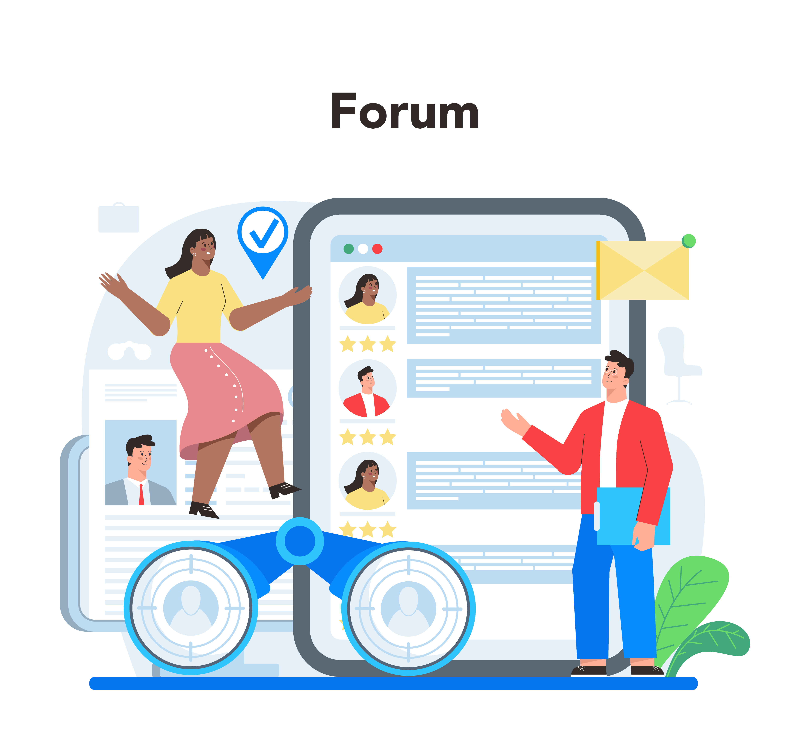

Interview Preparation

Ready for That Interview ?
Whether it's your first or your fifth, being prepared makes all the difference. Learn how to research the company, practice common questions, and present your strengths with confidence. From virtual setups to final follow-ups, we've got you covered.
Practice Questions Through Our "Big Interviews"
Access real-world questions to get ready for technical and behavioral rounds.
Video Guides
Learn from expert-led videos on interview body language, tone, and storytelling.
Resume & Seek Jobs Tips
Get your profile and resume interview-ready with expert-backed advice.
"Success is where preparation and opportunity meet."
— Bobby Unser